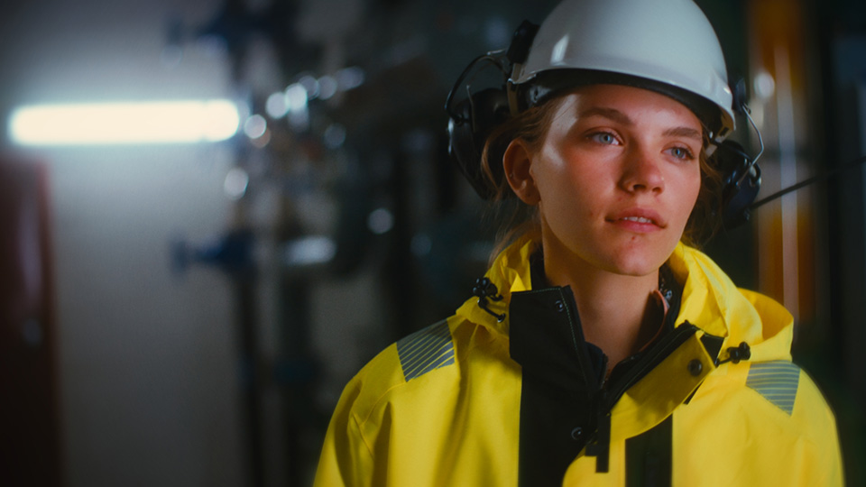
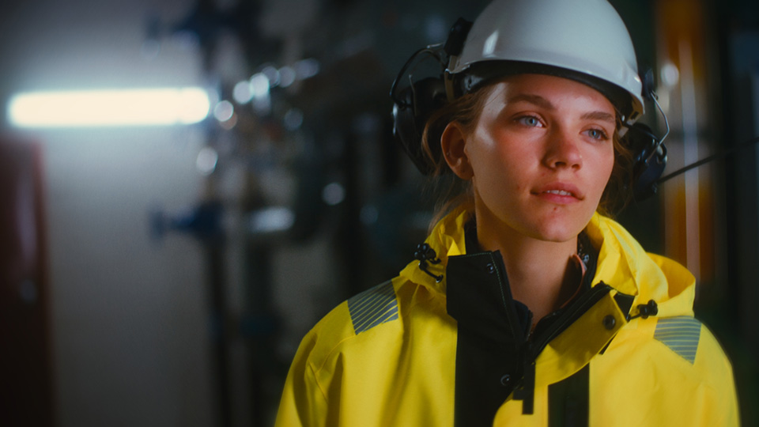
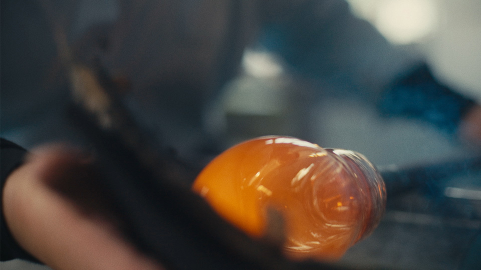
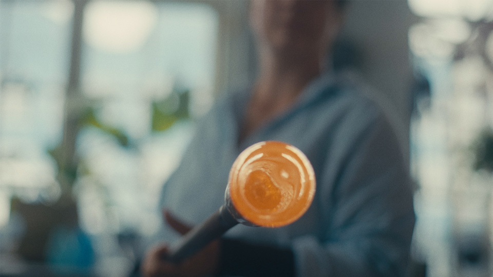
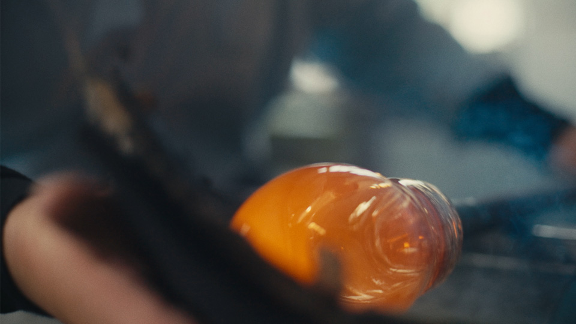
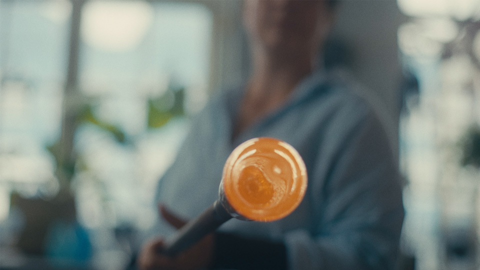

The Art of Color Grading in Commercial Films
The way a film looks has a big impact on how we react to the story being told. Many elements make up the look of a film, like lens choice, lighting and color-grading; these elements work together to guide emotions, focus attention, and deepen immersion.
Creating a cohesive look is one of the key tools we use to tell more engaging stories that stand out.
 

Vintage Glass and Lens Choice
Vintage lenses bring character to modern digital sensors, bridging the gap to the magic of 35mm motion picture film.
Equally important are the aperture, filters, and consistency of lens choice. Using a specific set of lenses with matching coatings creates a cohesive visual language.

Movement and Motion Blur
Movement guides the audience's gaze and holds their attention. Frame rate and shutter speed work together to produce motion blur - the slight smearing of fast movement that feels natural to the human eye.
The correct balance of frames per second (often 24fps for that classic cinematic feel) and motion blur is one of the cornerstones of filmmaking, preserving the timeless look of cinema perfected over a century.
Light and Shadow
Light shapes the mood and tone of a film. The way light falls - its direction, intensity, and whether it's hard or soft - along with the absence of light through shadow, plays a pivotal role in defining a film's visual identity.
 



Color Grading
Color grading is both an art form and a technical craft, balancing emotional tone with visual consistency. The grade is where the look of a film is finalized, the last step of the process to bring character, mood, warmth and emotion to the screen.
Crafting the look of a film is a delicate balance between technical choices and artistic instincts. Each decision; lenses, movement, lighting and color, is an important ingredient in the look of a film.